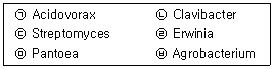
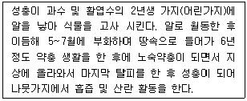
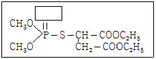
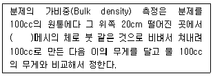

식물보호기사 (2011-10-02 기출문제)
1과목: 식물병리학
1. 다음 세균 속(屬) 중 그램(Gram)음성 세균만을 모두 고른 것은?

- ㉠, ㉢, ㉥
- ㉡, ㉤, ㉥
- ㉠, ㉡, ㉢, ㉣
- ㉠, ㉣, ㉤, ㉥
(정답률: 74%)

2. 잎에 누렁 증상(황화)이 나타나는 원인으로 가장 거리가 먼 것은?
- 불소독성
- 질소결핍
- 저온
- 파이토플라스마 감염
(정답률: 57%)
3. 다음 중 병원성이 다른 레이스(race)가 가장 많이 알려진 병원균은?
- Puccinia graminis
- Alternaria mali
- Botrytis cinerea
- Fusarium solani
(정답률: 42%)
4. 사과나무 배나무의 불마름병(화상병)의 효과적인 방제법이 아닌 것은?
- 매개충 구제
- 석회보르도액 살포
- 토양소독
- 감염된 부위 제거
(정답률: 47%)
5. 병 발생이 용이한 환경에서 병원력이 강한 병원균이 존재하는 토양에 저항성이 강한 작물을 재배하였을 때의 병 발생 정도는?
- 전혀 발생하지 않는다.
- 이병성 작물 재배시보다 적다.
- 이병성 작물 재배보다 심하다.
- 작물의 저항성에 상관없이 병 발생이 심하다.
(정답률: 82%)
6. 벼 도열병에 저항성이었던 품종들이 재배를 시작한 지 몇 년 안에 도열병에 걸리게 되는 이유로 가장 적합한 것은?
- 농약의 효과가 떨어지기 때문이다.
- 품종 자체의 성질이 바뀌었기 때문이다.
- 도열병균의 새로운 레이스(생리형)가 생기기 때문이다.
- 도열병균과 비슷한 여러 가지 다른 병균이 발생하기 때문이다.
(정답률: 90%)
7. 토마토 풋마름병에 대한 설명으로 옳은 것은?
- 단범성 병이다.
- 세균에 의한 병이다.
- 월동은 주로 종자에서 한다.
- 뿌리에 침입시 뿌리가 흰색으로 변한다.
(정답률: 78%)
8. 벼 잎집무늬마름병의 전염원은?
- 월동균핵
- 분생포자
- 담자포자
- 자낭포자
(정답률: 40%)
9. 병원균이 1차로 토양 전염되고, 2차로 유주자낭에 의해 비바람에 의하여 전염되는 병은?
- 벼 도열병
- 보리 북지모자이크병
- 사과나무 흰가루병
- 고추 역병
(정답률: 57%)
10. 코흐의 원칙(Koch’s postulates)은 다음 중 어느 때 적용해야 하는가?
- 병원체를 기주식물에 인공 접종할 때
- 병원체를 인고 배지에서 순수 배양할 때
- 병원체를 다른 기관 또는 사람에게 분양할 때
- 병원체를 확인하고 동정(ientification)할 때
(정답률: 68%)
11. Streptomyces scabies에 의해 발생하는 병은?
- 감자 가루더뎅이병
- 감자 더뎅이병
- 감자 둘레썩음병
- 감자 암종병
(정답률: 74%)
12. 다음 중 가장 작은 식물 병원은?
- 진균류
- 세균류
- 바이러스
- 바이로이드
(정답률: 89%)
13. 세균의 분자생물학적 분류법에 해당하지 않는 것은?
- monoclonal 항체
- DNA의 염기조성
- rRNA의 상동성
- DNA 절편(RFLP)의 다양성
(정답률: 75%)
14. 보리의 속깜부기병과 겉깜부기병의 구분 점은?
- 기주 범위
- 후벽포자의 포장에서 비산유무
- 후벽포자의 형성 유무
- 위 세가지 모두 가능
(정답률: 65%)
15. 병원균이 Pyricularia oryzae(P.grisea)인 병은?
- 벼 도열병
- 벼 흰잎마름병
- 맥류 줄기녹병
- 맥류 흰가루병
(정답률: 77%)
16. 산불 발생 직후에 특히 많이 발생되는 수목병해는?
- 소나무 혹병(Pine Gall Rust)
- 리지나뿌리썩음병(Rhizina Root Rot)
- 잣나무 피목가지마름병(Dieback of Pines)
- 아밀라리아뿌리썩음병(Armillaria Root Rot)
(정답률: 61%)
17. Trichoderma 속 균에 의하여 방제효과를 얻을 수 있는 병은?
- Rhizoctonia 속 균에 의한 병
- Xanthomonas 속 균에 의한 병
- Streptomyces 속 균에 의한 병
- Agrobacterium 속 균에 의한 병
(정답률: 55%)
18. 포장위생에 의한 방제방법과 가장 관계가 깊은 것은?
- 토양산도의 조절
- 병든 식물의 제거
- 시비량의 조절
- 파종기의 조절
(정답률: 77%)
19. 병원균의 침입에 대응하여 식물체가 나타내는 저항성 기작이 아닌 것은?
- 이층 형성
- 수지 분비
- 전충제 형성
- 일액 현상
(정답률: 83%)
20. 토양 서식 병원균으로 알려져 있는 것은?
- Pyricularia oryzae
- Agrobacterium tumefaciens
- Cercospora beticola
- Alternaria mali
(정답률: 82%)
2과목: 농림해충학
21. 곤충다리의 마디 순서로 옳은 것은?
- 기절 → 전절 → 퇴절 → 경절 → 부절
- 기절 → 퇴절 → 경절 → 전절 → 부절
- 기절 → 퇴절 → 전절 → 경절 → 부절
- 기절 → 전절 → 부절 → 퇴절 → 경절
(정답률: 70%)
22. 해충의 살충기작으로 신경기능 저해를 유발하는 계통의 농약이 아닌 것은?
- 곤충생장조절제
- carbamate계
- 유기인계
- pyrethroid계
(정답률: 71%)
23. 밀도의존적 치사요인에 대한 설명으로 옳은 것은?
- 탄생율은 개체군 내 밀도에 비례한다.
- 사망률은 개체군 내 밀도에 비례한다.
- 사망률은 개체군 내 밀도에 반비례한다.
- 사망수는 개체군 내 밀도에 반비례한다.
(정답률: 78%)
24. 야외에서 채집하여 실내에서 건조시킨 나방의 표본을 만들려고 한다. 다음 중 나방의 날개를 바르게 펴기 위해 사용하는 기자재가 아닌 것은?
- 삼각관
- 고정침
- 전시판
- 종이테이프
(정답률: 56%)
25. 일반적인 곤충강의 특징으로 옳은 것은?
- 가슴ㆍ배에 마디가 있고, 더듬이는 1쌍이 있다.
- 머리가슴ㆍ배의 2부로 구분된다.
- 다리는 4쌍이고 7마디로 구성된다.
- 눈을 홑눈만 있다.
(정답률: 81%)
26. 후장의 형태와 기능에 대한 설명으로 틀린 것은?
- 말피기관으로부터 항문에 이르는 소화기관 부위이다.
- 배설의 중요한 기능을 한다.
- 수분과 염류의 균형을 유지시킨다.
- 주 기능은 영양분의 흡수이다.
(정답률: 76%)
27. 현재 우리나라 소나무림에 가장 피해를 심하게 주는 소나무재선충을 애개하는 솔수염하늘소의 우화시기로 가장 적합한 것은? (단, 우리나라 남부지방)
- 2월 ~ 4월
- 5월 ~ 7월
- 8월 ~ 10월
- 11월 ~ 1월
(정답률: 75%)
28. 1958년경 우리나라에 처음 발견되었으며, 1년에 2회 발생하고, 과수 및 뽕나무 등 활엽수를 갉아먹으며 가로수에 큰 피해를 주는 해충은?
- 박쥐나방
- 미국흰불나방
- 오리나무잎벌레
- 솔나방
(정답률: 77%)
29. 곤충의 발육 및 성장에 영향을 주는 환경요인으로 가장 거리가 먼 것은?
- 기상
- 먹이
- 토성
- 다른 생물
(정답률: 67%)
30. 벼메뚜기의 형태에 대한 설명으로 틀린 것은?
- 겹눈은 난형으로 광택이 있는 회갈색이다.
- 성충은 길이가 30 ~ 38mm이다.
- 알은 길이가 10mm 정도이며, 긴 타원형이고 황색이다.
- 몸은 황록색이며 머리와 가슴은 황갈색이다.
(정답률: 69%)
31. 해충의 방제법으로 부적합한 것은?
- 물리적 방제방법
- 경종적 방제방법
- 생물적 방제방법
- 감수성품종 재배
(정답률: 84%)
32. 페로몬은 같은 종 내의 다른 개체간 통신 목적으로 사용되는 물질을 말한다. 페로몬을 이용목적에 따라 분류할 때 이에 해당하지 않는 것은?
- 성페로몬
- 집합페로몬
- 경보페로몬
- 방어페로몬
(정답률: 63%)
33. 벼에 줄무늬잎마름병, 검은줄오갈병의 바이러스병을 매개하는 해충은?
- 벼멸구
- 애멸구
- 혹명나방
- 이화명나방
(정답률: 81%)
34. 우리나라 곤충이 속하는 지리적 위치는?
- 신북구
- 동양구
- 구북구
- 신열대구
(정답률: 64%)
35. 곤충의 휴면(休眠)에 대한 설명으로 틀린 것은?
- 곤충이 살아남기 위한 하나의 방편으로 진화된 과정이다.
- 휴면을 유기하는 환경조건은 반드시 불리한 것만이 아니라 불리한 조건이 시작될 것을 알려 주는 것이다.
- 휴면시에 곤충의 신진대사는 현저히 떨어진다.
- 측안과 같은 시각기관은 곤충의 광주반응을 결정하는 유일한 광수용기이다.
(정답률: 77%)
36. 최근 침입한 외래 해충으로 가로수인 양버즘나무(플라타너스)에 대발생하여 잎을 황화 시키는 흡즙성 해충은?
- 꽃노랑총채벌레
- 목화진딧물
- 버즘나무방패벌레
- 소나무재선충
(정답률: 68%)
37. 종합적 해충관리 방법과 가장 거리가 먼 것은?
- 농약의 합리적인 사용
- 천적이용 확대
- 해충군 보다 개개를 대상으로 한 효과적 방제
- 해충발생 예찰의 철저
(정답률: 87%)
38. 유기인계 살충제의 주요 작용점으로 옳은 것은?
- 표피의 왁스층(wax層)
- 기관소지
- 근육
- 시냅스부(synapse)
(정답률: 73%)
39. 다음 설명하는 해충은?

- 말매미
- 끝검은말매미충
- 배나무방패벌레
- 솔껍질깍지벌레
(정답률: 72%)
40. 복숭아순나방에 대한 설명으로 틀린 것은?
- 1년에 3~4회 발생한다.
- 유층으로 월동한다.
- 새로 나온 가지만을 가해한다.
- 배나무의 겨우 만생종에 피해가 크다.
(정답률: 61%)
3과목: 재배학원론
41. 식물체의 내건성을 증대시키는 식물호르몬은?
- 옥신(Auxin)
- 지베렐린(Gidderellin)
- 에틸렌(Ethylene)
- 아브시스산(Abscisic acid)
(정답률: 54%)
42. 사질토양에 점토함량이 많은 흙은 객토하였을 때의 효과로 틀린 것은?
- 양이온교환용량이 증대한다.
- 무기양분의 용탈이 증대한다.
- 토양의 완충능이 증대한다.
- 토양의 부수력이 증대한다.
(정답률: 75%)
43. 작물의 종류와 시비에 대한 일반적인 설명으로 틀린 것은?
- 과실을 수확하는 작물은 결과기에 인 및 칼리질 비료를 충분히 주어야 한다.
- 종자를 수확하는 작물은 생식생장기에 질소를 많이 주어야 한다.
- 잎을 수확하는 작물은 생육기간 동안 충분한 질소를 주어야 한다.
- 뿌리나 땅속줄기를 수확하는 작물은 칼리를 충분히 주어야 한다.
(정답률: 63%)
44. 멀칭(mulching)의 효과로 옳은 것은?
- 생육촉진
- 비료절감
- 풍해유도
- 낙과방지
(정답률: 65%)
45. 작물의 침관수해에 대하여 잘못 설명한 것은?
- 수온이 높을수록 피해가 크다.
- 정체수는 유수보다 피해가 크다.
- 물이 빠지면 잎의 흙 앙금을 씻어준다.
- 흐린 물보다 맑은 물에서 피해가 더 크다.
(정답률: 81%)
46. 추경(秋耕)의 효과를 기대하기 어려운 조건은?
- 토양이 습할 때
- 토양이 점질인 겨우
- 토양유기물 함량이 많은 경우
- 겨울철에 강수가 많은 경우
(정답률: 59%)
47. 벼의 키다리병을 유발하는 물질로부터 밝혀진 식물호르몬은?
- 옥신
- 지베렐린
- 시토키닌
- 에틸렌
(정답률: 86%)
48. 장일성 식물(長日性 植物)만 나열한 것은?
- 고추, 토마토
- 벼, 코스모스
- 시금치, 봄보리
- 콩, 나팔꽃
(정답률: 52%)
49. 산성토양에 가장 강하면서 연작의 장해가 적은 작물로만 나열된 것은?
- 옥수수, 시금치
- 담배, 콩
- 양파, 자운영
- 벼, 귀리
(정답률: 55%)
50. 토양을 보호하여 침식을 막는 효과를 가진 작물은?
- 내식성(耐蝕性)작물
- 내영섬(耐鹽性)작물
- 청초작물
- 자급작물
(정답률: 78%)
51. 벼의 도복을 방지하기 위한 방법과 거리가 먼 것은?
- 질소와 규소의 시용을 늘린다.
- 내도복성 품종을 선택하여 재배한다.
- 병해충을 잘 방제한다.
- 절간신장을 억제하는 생장조절제를 이용한다.
(정답률: 75%)
52. 벼 종자에 과산화석회를 분의하여 파종하는 주 목적은?
- 산소공급
- 종자소득
- 도복방지
- 냉해방지
(정답률: 56%)
53. 접목의 이점으로 거리가 먼 것은?
- 수세를 조절한다.
- 품지를 향상시킨다.
- 품종 개랴에 이용한다.
- 병충해 저항성을 증대시킨다.
(정답률: 54%)
54. 작물의 생육이 가능한 가장 낮은 온도를 최저온도(最低溫度)라 하는데, 다음 중 최저온도가 가장 낮은 작물은?
- 벼
- 호밀
- 멜론
- 귀리
(정답률: 51%)
55. 벼 생육단계에서 생육최저온도가 가장 높은 시기는?
- 유묘기
- 분얼기
- 수잉기
- 등숙기
(정답률: 48%)
56. 방사선동위원소의 이용을 옳게 설명한 것은?
- 감자에 60Co에 의한 γ을 조사하여 맹아를 억제시킨다.
- 잎에 32P를 공급하여 광합성기작을 구명한다.
- 24Na를 이용하여 필수원소의 동태를 파악한다.
- 45Ca를 이용하여 제방의 누수개소를 밝힌다.
(정답률: 58%)
57. 작물에 많이 이용되는 토양수분은?
- 모관수
- 결합수
- 중력수
- 흡착수
(정답률: 77%)
58. 작물의 내동성을 증가시키는 요인을 옳게 설명한 것은?
- 원형질의 수분투과성이 작으면 세포내결빙이 적어져 내동성이 크다.
- 원형질단백질에 –SS기가 많은 것이 내동성이 크다.
- 친수성 콜로이드가 적으면 자유수가 적어 내동성이 크다.
- 당분함량이 많아지면 삼투포텐셜이 낮아져 내동성이 크다.
(정답률: 57%)
59. 작물의 수분 상태에 대한 설명으로 옳은 것은?
- 포장용수량 조건에서 작물의 수분퍼텐셜은 토양보다 일반적으로 낮다.
- 작물의 수분퍼텐셜은 압력퍼텐셜의 변화에 의해 주로 변화한다.
- 요수량이 낮은 작물일수록 습한 토양을 좋아한다.
- 작물의 수분퍼텐셜은 항상 0보다 크다.
(정답률: 53%)
60. 종자춘화형 식물이 아닌 것은?
- 완두
- 추파맥류
- 봄무
- 양배추
(정답률: 55%)
4과목: 농약학
61. 유기인계 살충제에 의한 중독시 가장 적당한 제독제는?
- Vitamin K
- EDTA-Ca
- Atropine sulfate
- British anti lewisite
(정답률: 65%)
62. 농약사용법에 의한 약해가 아닌 것은?
- 섞어 쓰기 때문에 일어나느 약해
- 동시 사용으로 인한 약해
- 불순물 혼합에 의한 약해
- 근접 살포에 의한 약제
(정답률: 72%)
63. 식물의 병반이나 상처부위에 직접 발라서 병을 방제하는 방법은?
- 분의법
- 관주법
- 도포법
- 독이법
(정답률: 77%)
64. 농약의 제제형태는 주제와 증량제, 용제, 계면활성제 등으로 나뉜다. 이 중 계면활성제가 가지는 작용이 아닌 것은?
- 습윤작용(wetting property)
- 응집작용(coagulating property)
- 침투작용(penetrating property)
- 고착작용(adhesive property)
(정답률: 50%)
65. 디디티(DDT)와 유사한 화합물이지만 곤충에 대한 살충력은 없고 응애류에만 선택적 살비력을 나타내는 약제는?
- 테디온
- 디코폴(컬세인)
- 아조포(호스타치온)
- 아진포(구사치온)
(정답률: 72%)
66. 다음 중 2,4-D의 합성과 관계가 없는 것은?
- 2,4-디클로로페놀(2,4-dichlorophenol)
- 모노클로로초산(CH2ClCOOH)
- 가성소다(NaOH)
- 시안화나트륨(NaCN)
(정답률: 42%)
67. 다음 중 디티오카르바메이트기를 가지고 있는 농약은?
- 메틸브로마이드
- 석회유황합제
- 포리옥신
- 만코제브
(정답률: 59%)
68. 백합의 신장억제 및 배추의 생장억제에 주로 사용되는 생장조정제는?
- 디니코나졸액상수화제
- 지베레린수용제
- 에세폰액제
- 루톤분제
(정답률: 54%)
69. 다음 2,4-D 산, 또는 그의 염과 에스테르 중 물에 가장 잘 녹는 화합물은?
- 2,4 – D 산
- 2,4 – D 소다염
- 2,4 – D 에스테르형
- 2,4 – D 아민염
(정답률: 45%)
70. 유제를 1500배로 희석하여 액량 15L로 살포하려 한다. 이 때 원액약량은 몇 mL가 필요한가?
- 1
- 10
- 100
- 1000
(정답률: 72%)
71. 다음 중 사과의 부란병 방제에 적합한 약제는?
- polyoxin A
- polyoxin B
- polyoxin C
- polyoxin D
(정답률: 57%)
72. 농약이 갖추어야 할 사항으로 틀린 것은?
- 인축에 대한 독성이 낮아야 한다.
- 적용 해추의 범위가 넓고 비선택적이어야 한다.
- 작물 또는 토양에 대한 잔류성이 없어야 한다.
- 토양 및 수질 오염을 유발시키지 않아야 한다.
(정답률: 83%)
73. 보호살균제의 특성에 대한 설명 중 틀린 것은?
- 강력한 포자발아 억제작용을 나타낸다.
- 약효가 일정기간 유지되는 지효성이 있다.
- 균사체에 대하여 강력한 살균작용을 나타낸다.
- 살포 후 작물체 표면에서의 부착성과 고착성이 우수하다.
(정답률: 54%)
74. 해충의 콜린에스테라아제 효소활성을 저해시키는 약제는?
- 디코폴수화제
- 사이헥사틴수화제
- 네오아소진액제
- 다이아지논유제
(정답률: 63%)
75. 다음은 malathion의 구조식 중 일부이다. 네모 안에 들어갈 원소는?

- O
- S
- NH
- CH2
(정답률: 50%)
76. 사용목적에 따른 살충제 농약의 분류에 해당하지 않는 것은?
- 식독제
- 미립제
- 유인제
- 기피제
(정답률: 72%)
77. 다음 ( )안에 들어갈 적당한 수치는?

- 60
- 80
- 100
- 120
(정답률: 52%)
78. 살균효과 이외에 잘록병 예방효과, 뜸묘방지, 뿌리 생육촉진 등 식물의 생장조절 효과가 동시에 있는 약제는?
- 훼나리
- 하이멕사졸(다찌가렌)
- 트리포린
- 2,4 – D
(정답률: 52%)
79. 어떤 살충제에 대하여 저항성이 발달한 해충에 한번도 사용한 적은 없지만 작용기구가 같은 살충제에 저항성을 나타내는 현상을 무엇이라 하는가?
- 교차저항성
- 단일저항성
- 효과저항성
- 돌연변이설
(정답률: 83%)
80. 유기인계 살충제의 작용상의 특징이 아닌 것은?
- 살충력이 강하고 적용해충의 범위가 높다.
- 동ㆍ식물체내에서의 분해가 빠르다.
- 알칼리에 대하여 분해되기 쉽다.
- 약해가 비교적 큰 편이며 잔효성도 길다.
(정답률: 68%)
5과목: 잡초방제학
81. 2,4-D의 어떤 유형을 논에 산포하였는데 주위에 있는 콩밭에서 약해가 발생하였다. 어떤 유형의 2,4-D에서 가장 크게 약해가 유발될 수 있는가?
- 2,4-D amine salts형
- 2,4-D ester형
- 2,4-D acid형
- 2,4-D sodium salts형
(정답률: 64%)
82. 부유성 수생잡초로서 다발생시 수온을 저하시켜 벼의 초기생육에 영향을 미치는 것은?
- 올미
- 가래
- 물달개비
- 개구리밥
(정답률: 63%)
83. 잡초의 예방적 방제법이라고 할 수 없는 것은?
- 재배관리의 합리화
- 오염된 작물 종자의 수확관리
- 농기계의 청결
- 경합특성이용
(정답률: 60%)
84. 일반적으로 경합 한계기간은 작물 전 생육기간 중 얼마를 차지하는가?
- 첫 1/2 ~ 3/4 기간
- 첫 1/4 ~ 1/3 기간
- 첫 1/5 ~ 1/6 기간
- 첫 1/10 ~ 1/9 기간
(정답률: 80%)
85. 제초제의 토양내 지속성과 가장 관계가 적은 것은?
- 경운 및 정지
- 광분해 및 휘발성
- 토양에 흡착 및 용탈
- 미생물 및 화학적 분해
(정답률: 65%)
86. 방동사니류 잡초가 아닌 것은?
- 올방개
- 올미
- 올챙이고랭이
- 바람하늘지기
(정답률: 60%)
87. 광합성(光合性)을 억제하는 계열의 제초제가 아닌 것은?
- acetamide 계
- urea 계
- triazine 계
- bipyridylium 계
(정답률: 41%)
88. 형태적 특성에 따라 잡초를 분류할 때 같은 잡초들끼리 나열한 것은?
- 깨풀, 비름, 닭의장풀, 쇠비름
- 강아지풀, 개기장, 방동사니, 여뀌
- 바랭이, 쇠비름, 메꽃, 방동사니
- 독새풀, 깨풀, 개비름, 망초
(정답률: 55%)
89. 여름에 발생하는 화본과 밭잡초는?
- 참방동사니
- 바랭이
- 쇠비름
- 깨풀
(정답률: 68%)
90. 논의 수도작 재배에 사용하는 것이 부적당한 제초제는?
- 뷰타클로르 ㆍ 카펜트라존에틸 입제
- 이사디 액제
- 옥사디아존 유제
- 알라클로르 유제
(정답률: 43%)
91. 환경친화형 제초제의 구비조건에 해당하지 않은 것은?
- 토양의 하부 이동이 낮고 지하수 오염이 적어야 한다.
- 제초효과를 나타낸 이후 활성성분의 분해가 빨라야 한다.
- 잡초를 방제하되 다른 생물(비표적 생물)에 대한 영향이 적어야 한다.
- 인축독성이 높더라도 천연에서 생산되는 것이라면 적합하다.
(정답률: 78%)
92. 논 제초제를 이용한 화학적 방제법 중에서 제초제 처리시기로 바람직하지 않는 것은?
- 잡초 발아전 처리
- 작물 파종(이식)후 처리
- 작물 생육 초중기 처리
- 수확기 처리
(정답률: 75%)
93. 6% 유효성분 입제를 1ha당 30kg 논에 처리하였다. 논물 속에 함유된 약제의 농도는 몇 ppm인가? (단, 물의 깊이는 5cm)
- 3.6 ppm
- 5.6 ppm
- 8.5 ppm
- 10 ppm
(정답률: 38%)
94. 포장에서 벼와 광(光)경합이 가장 크게 일어나는 잡초는?
- 강피
- 쇠털골
- 올챙이고랭이
- 마디꽃
(정답률: 83%)
95. 잡초의 군락천이를 유발시키는데 다음 중 가장 밀접한 관계가 있는 요인은?
- 작물 연작재배
- 장간종 품종재배
- 다비 재배법으로 재배
- 동일한 제초제의 연용
(정답률: 82%)
96. 잡초의 생물학적 방제에 비하여 화학적 방제법이 지닌 단점은?
- 작용 효과가 늦다.
- 처리가 용이하지 않다.
- 잔류성이 문제이다.
- 효과가 적다.
(정답률: 78%)
97. 논 다년생잡초의 증가 요인으로 가장 거리가 먼 것은?
- 답리작의 감소
- 손제초의 감소
- 시비량의 감소
- 추경 및 춘경의 감소
(정답률: 64%)
98. 논 다년생잡초가 아닌 것은?
- 개구리밥, 벗풀, 가래
- 벗풀, 매자기, 검정말
- 나도겨풀, 올방개, 너도방동사니
- 곡정초, 큰고추풀, 물별
(정답률: 55%)
99. 작물과 잡초간에 일어난 경합에 대한 설명으로 틀린 것은?
- 작물과 작물간에도 경합이 있다.
- 작물의 생육기간 동안 경합은 일정하게 일어난다.
- 일반적으로 작물과 잡초간의 경합은 종간경합이다.
- 작물이 종류가 같더라도 잡초의 종류가 다르면 경합양상이 달라진다.
(정답률: 70%)
100. 벼와 피의 주된 형태적 차이점은?
- 피에만 옆이가 있다.
- 벼에만 잎몸이 없다.
- 벼에만 잎혀가 있다.
- 벼와 피에는 잎집이 없다.
(정답률: 85%)